Fantasia
1940
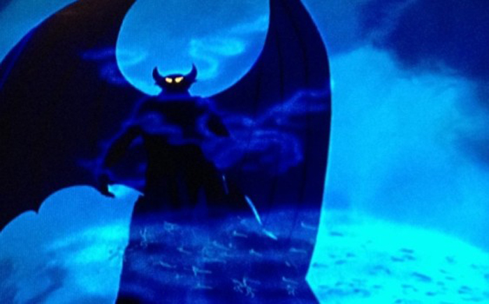
By the late 1930s, Nielsen was living in Hollywood and working for various studios in California. On the personal recommendation of a friend, he was hired by Walt Disney himself to work for The Disney Company, and designd the 'Night on Bald Mountain' sequence in Fantasia (1940)
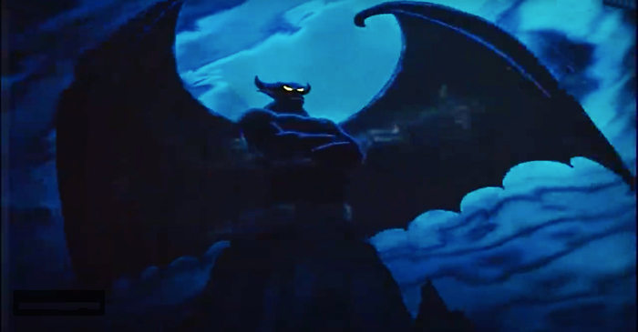
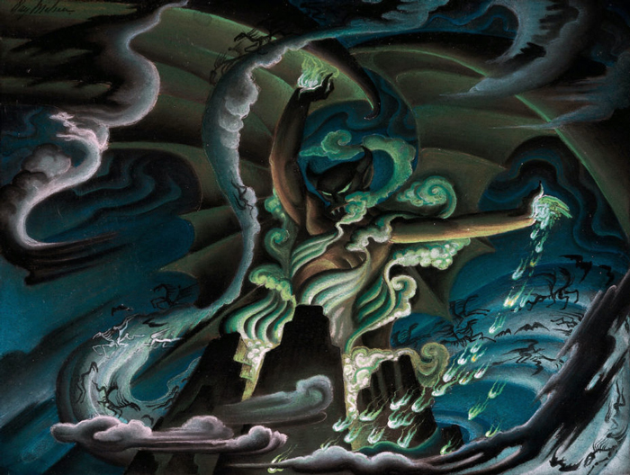
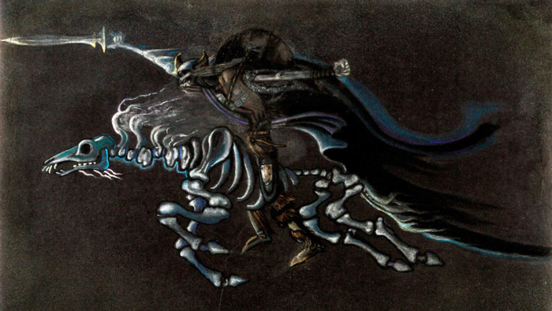
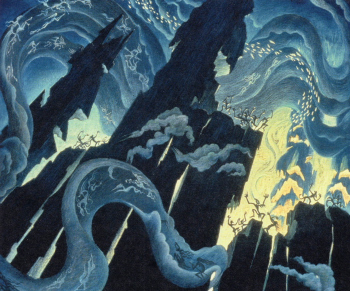
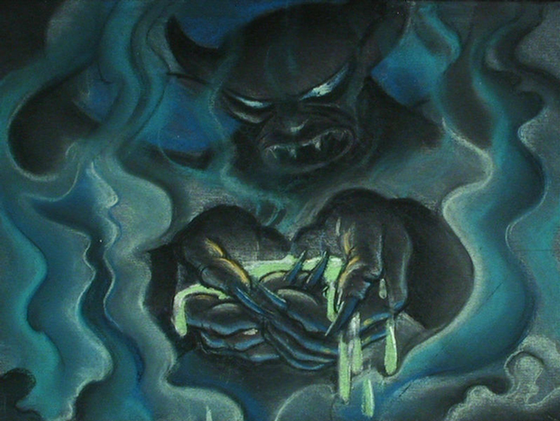
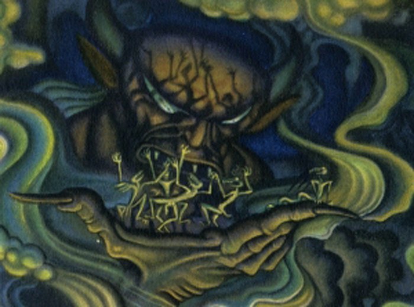
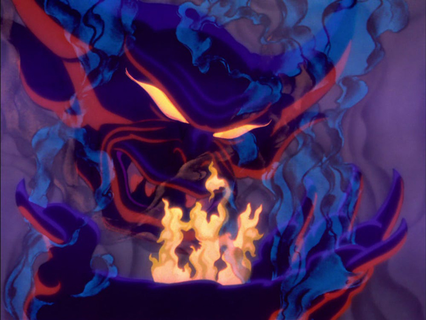
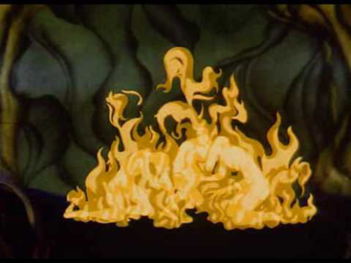
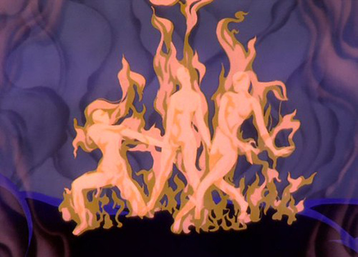
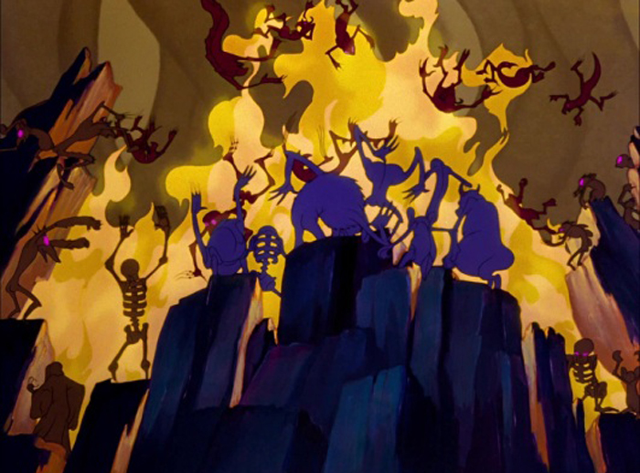
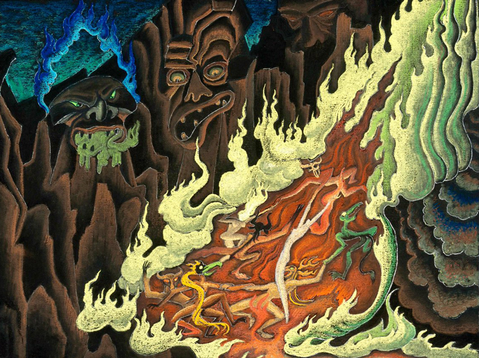
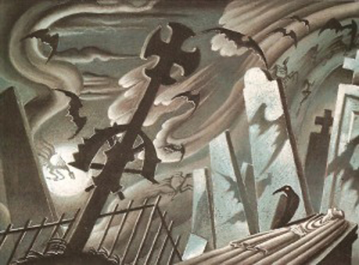
Nielsen was renowned at the Disney studio for his concept art and he contributed artwork for many Disney films, including concept paintings for a proposed adaptation of Hans Christian Andersen's The Little Mermaid. The adaptation was to be part of a film containing various segments based on Andersen's fairy tales. The film, however, was not made within Nielsen's lifetime and his work went unused until production started on the 1989 film.
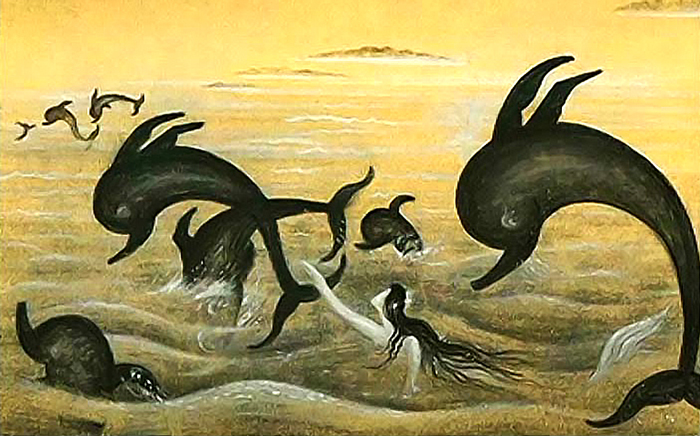
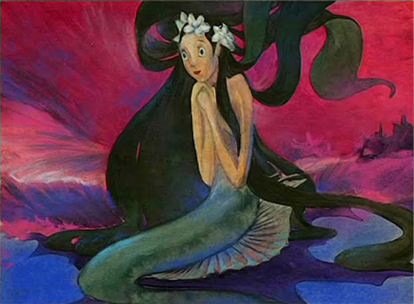
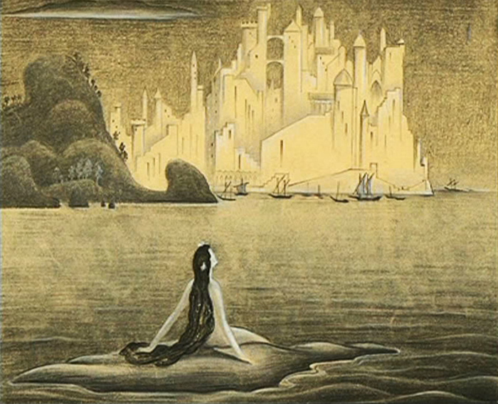
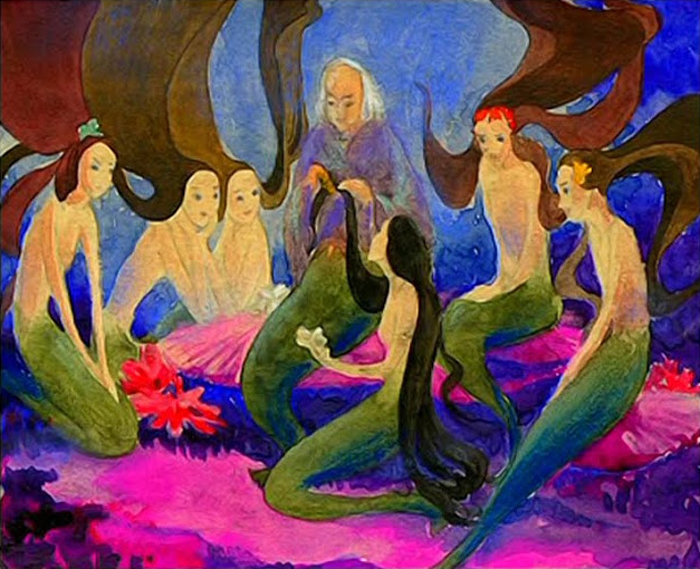
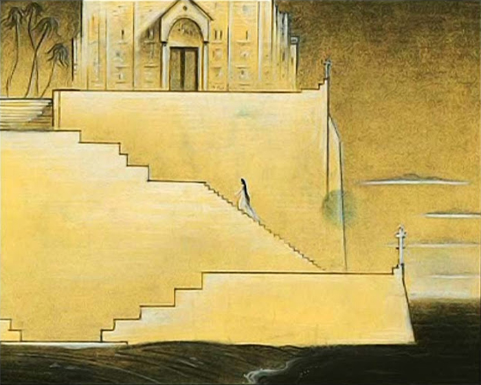
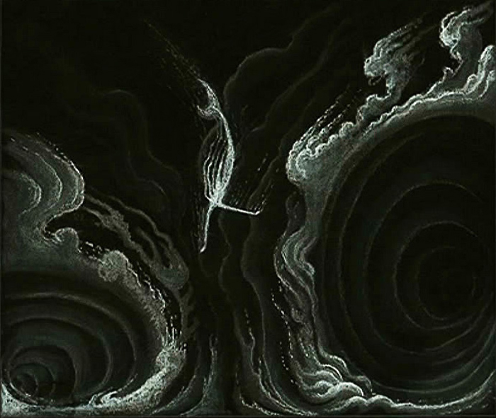
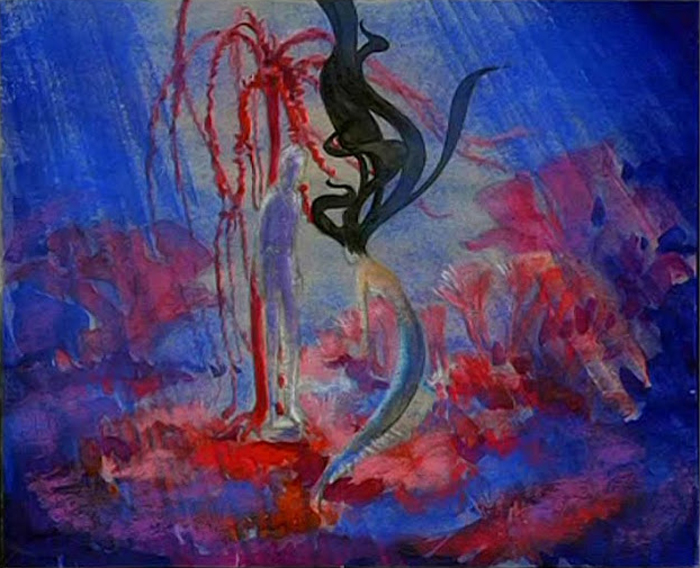
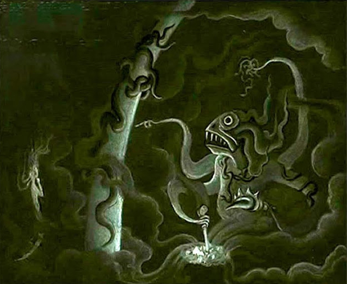
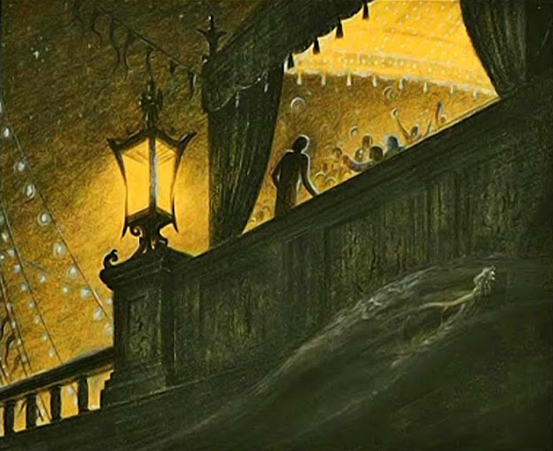